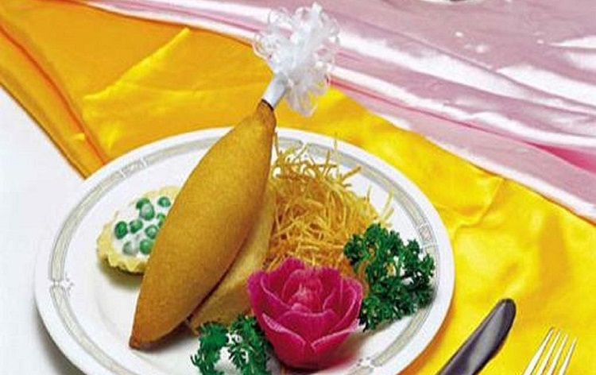
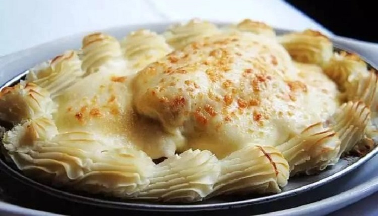
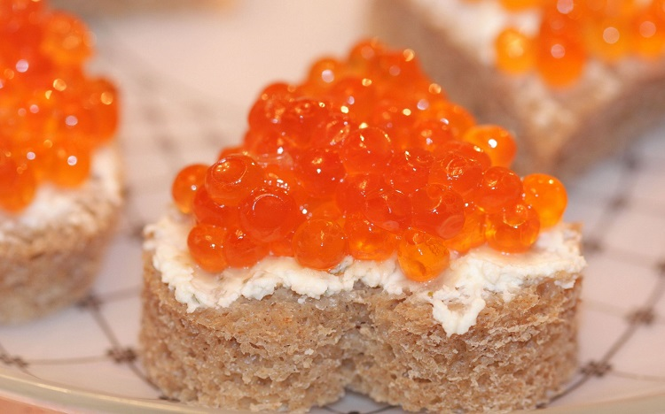

当地美食
#基辅式黄油鸡卷#
制作的肉卷是用冻黄油和鸡肉混和而成的，随着肉卷加热时温度升高，黄油慢慢融化，渗透到鸡肉卷的各个部分。

图：基辅式黄油鸡卷
#莫斯科烤鱼#
莫斯科烤鱼选用的是鲈鱼，先把鲈鱼煎熟，再在鲈鱼表面放上烧好的蘑菇、鸡蛋、洋葱，最后在上面覆盖上一层洁白的奶汁，再撒上一些芝士。

图：莫斯科烤鱼
#莫斯科鱼子酱#
鱼子酱历来是俄罗斯食品中的精品，在一些美食商店才有，且是论克卖的，在许多大饭店的宴会上，鱼子酱放在专门的精巧的水晶玻璃盛器里，晶莹剔透。

图：鱼子酱
#卡瓦斯#
这是俄罗斯民族特有的饮料，地位就好像欧美国家的可口可乐，中国的茶。
#俄式馅饼#
俄国古谚语中说道：俄国人的一生都伴随着馅饼。每逢重要节日、新年、洗礼、生日、命名日、婚礼以及葬礼，馅饼都是必不可少的重要菜肴.因为对俄罗斯人来说，馅饼有着“太阳”、“伟大节日”、“丰收”、“孩子健康”和“婚姻幸福”等多种含义。

图：俄式馅饼
#列巴#
黑列巴也就是黑面包，由面粉、荞麦、燕麦等原料烤制而成，颜色很深，是俄罗斯人的主食。
图：列巴
#伏特加#
14世纪，热那亚商人把伏特加作为药物卖到俄罗斯。到15世纪，热那亚人的谷物酿酒秘方终被揭开，用小麦、黑麦、大麦等作原料，经粉碎、蒸煮、糖化、发酵和蒸馏制得优质酒精后再进一步加工而成。
#红烩牛肉#
红烩牛肉作为一道典型的俄式菜，深受俄国人喜爱，同时世界各国人民到俄罗斯旅游的时候都会吃这道菜，肉香且十分时候下酒
#冷酸鱼#
冷酸鱼红润好看，口味酸甜，是一道非常受欢迎的俄式冷菜。
图：冷酸鱼
觅食好去处
#普希金餐厅#
普希金餐厅是在莫斯科最能体现地道的古老的俄罗斯菜品的最贵的餐厅。
地址：Tverskoy Blvd, 26а, Moscow
图：普希金餐厅
#Grabli（Dorogomilovo区）#
很值得去的一家连锁餐饮，不用担心看不懂俄文菜单，自助式的取餐方式，价格也比较亲民。
#My-My#
莫斯科比较实惠的餐厅之一，人均400Rub就能吃的很饱。采取自助餐点餐方式，各自那盘子餐具然后排队，前菜、冷盘、肉食、蔬菜、主食、甜品、饮料均有。
地址：Mjasnickaja Ulica 14/2, Moscow
图：My-My餐厅
#57号餐厅#
价格亲民，自助选餐的模式，从开胃菜到饮料到主食到甜点应有尽有。
地址：Red Square, Gum, Moscow